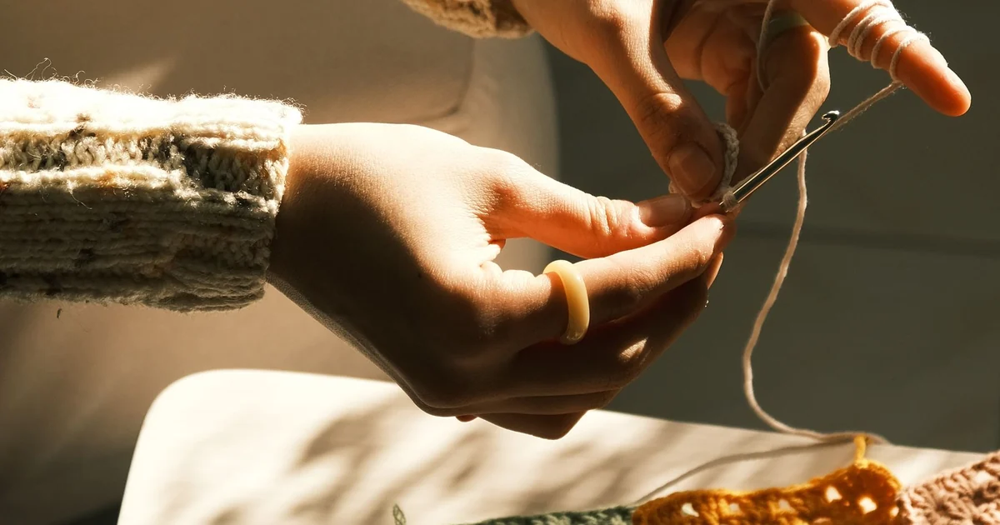
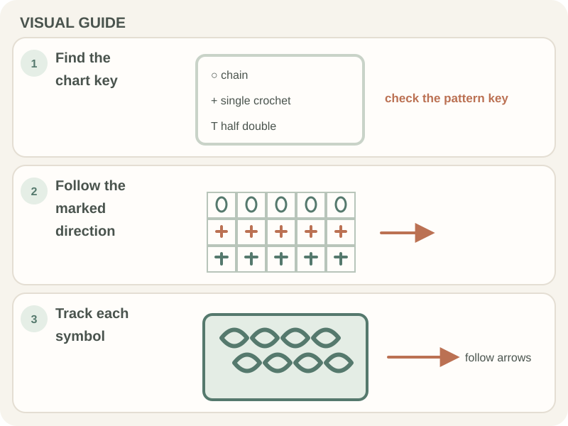

Patterns & Troubleshooting · Beginner guide
How to Read a Crochet Chart as a Beginner
A crochet chart uses symbols to show stitches and their placement; always read the chart key and starting direction first.

Symbols are not universal across all designers. A chart may show a flat row or a round, and its reading direction depends on the key and layout.
Before you begin
Keep the chart key and written instructions together if both are provided. Mark your current row or round with removable paper or a ruler.
Step-by-step instructions
- Find the chart key and identify the symbol for each stitch.
- Locate the start marker and arrow; note whether the chart is worked in rows or rounds.
- Read one symbol at a time in the indicated direction and track repeats.
- Compare a small section with the written instructions or completed swatch if available.

How to check your work
You should be able to point to your current row, identify each symbol from the key, and explain the direction of travel before stitching.
Common beginner problems
- I do not know where to start: Look for an arrow, number, or start symbol; charts may begin at different positions.
- The symbol looks unfamiliar: Use the chart’s own key rather than guessing from another pattern.
- My chart reading is reversed: Check row direction: flat rows often alternate direction, while rounds may be read differently.
Chart symbols and direction
A chart key defines the symbols for that design. The Craft Yarn Council publishes a crochet chart-symbol reference, but a pattern’s own key takes priority when its symbols differ.
Frequently asked questions
Do crochet chart symbols mean the same thing in every pattern?
Many are common, but follow the key supplied with the chart.
Which direction do I read a chart?
Follow its arrows and row or round numbering; direction depends on the chart.
Can I use a chart without written instructions?
Yes, if the key and starting point are clear. Practice a small section first.